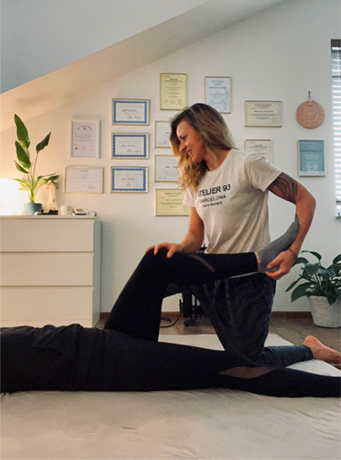
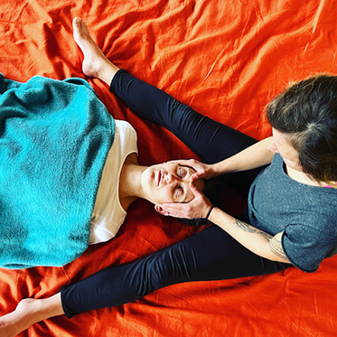

Nazywam się Agata Leśniewska. Jestem terapeutą manualnym, masażystą i terapeutą
Reiki oraz nauczycielem Hatha Yogi. Do każdego pacjenta podchodzę holistycznie, wiedząc że
ciało, umysł i dusza są nierozłącznie ze sobą połączone.
Staram się uwolnić emocje
zablokowane w ciele, uspokoić umysł, pomagam zrozumieć w jaki sposób emocje wpływają na ciało.
Agata

Podtytuł
Podtytuł
W mojej pracy wykorzystuję wiele technik terapii manualnej i masażu leczniczego,
masaż powięziowy, punktów spustowych bańki, klawiterapię oraz elementy chiropraktyki. Wykonuję
również sesje Terapeutycznego Masażu Tajskiego który posiada wiele narzędzi do głębokiej i
precyzyjnej pracy z tkankami miękkimi, stawami, a nawet organami wewnętrznymi.
Terapeutycznym Masaż Tajski wykonuje się na materacu, a pacjent jest w ubraniu. Masaż ten opiera się na technikach ucisku, pracy na powięzi, głębokiej pracy na tkance mięśniowej oraz rozciągania całego ciała.
Terapeutycznym Masaż Tajski wykonuje się na materacu, a pacjent jest w ubraniu. Masaż ten opiera się na technikach ucisku, pracy na powięzi, głębokiej pracy na tkance mięśniowej oraz rozciągania całego ciała.

Podtytuł
Zabiegiem wykraczającym poza klasyczną pracę z ciałem są sesje Reiki.
Reiki to niezwykła forma terapii energetycznej pochodząca z Japonii, która pobudza organizm do samouzdrawiania oraz pomaga odzyskać równowagę i harmonię życiową.
W trakcie sesji skupiam się na uregulowaniu przepływu energii życiowej, poprzez odpowiednie kierowanie energią, usuwam blokady energetyczne oraz zwiększam przepływ energii tam, gdzie pacjent najbardziej jej potrzebuje. REIKI wspomaga leczenie wielu schorzeń i dolegliwości pobudzając mechanizmy samouzdrawiania się, jakie każdy z nas posiada.
Reiki to niezwykła forma terapii energetycznej pochodząca z Japonii, która pobudza organizm do samouzdrawiania oraz pomaga odzyskać równowagę i harmonię życiową.
W trakcie sesji skupiam się na uregulowaniu przepływu energii życiowej, poprzez odpowiednie kierowanie energią, usuwam blokady energetyczne oraz zwiększam przepływ energii tam, gdzie pacjent najbardziej jej potrzebuje. REIKI wspomaga leczenie wielu schorzeń i dolegliwości pobudzając mechanizmy samouzdrawiania się, jakie każdy z nas posiada.
Terapię manualną wzbogacam dodatkowo zaleceniami ćwiczeń opartych na jodze lub
ćwiczeniami fizjoterapeutycznymi. Prowadzę grupowe zajęcia jogi oraz sesje 1:1 jogi oraz treningu
wzmacniająco - usprawniającego.